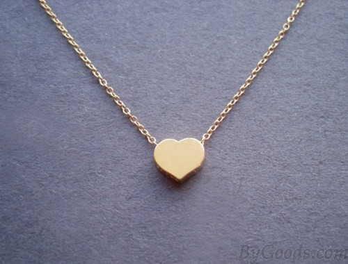
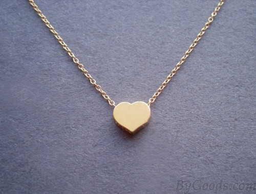

With Halal food that fills around 80% but requires half my money and I normally dont go over 40% of my current balance. With Chinese food it makes me a tad slugish and sleepyl however it fills me up and does help clam my nerves, odd I know. With Checkers ehhh its pretty greasy and high in calories, super delicious yes but it doesn't fill me up to be honest.
Oh yeah before I forget I also need to save at least half of my money to get my mentor a special gift for our one month anniversary.So uhh I'll also need your help with that as well.
I already have most of the money saved up for a cute necklace but im missing another 5$ for her gift.
So what should I go with?
 
go to home page
go to final page

go to home page
go to final page